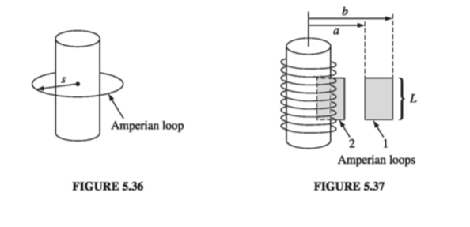
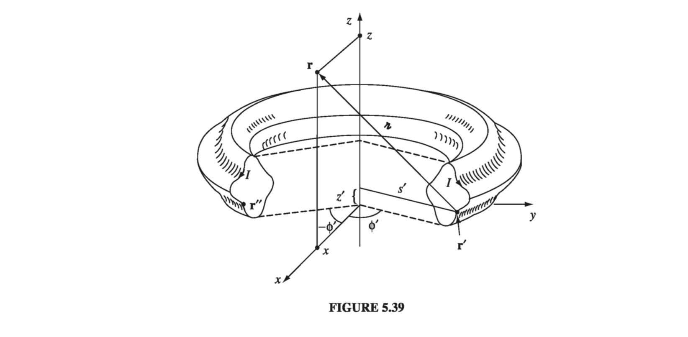

5.3: The Divergence and Curl of B
5.3.1: Straight-Line Currents
The magnetic field of an infinite straight wire is shown in Fig 5.27 (the current is coming out of the page). At a glance, it is clear that this field has a nonzero curl (something you'll never see in an electrostatic field); let's calculate it.

According to Eq. 5.38, the integral of B around a circular path of radius s, centered at the wire, is Notice that the answer is independent of s; that's because B decreases at the same rate as the circumference increases. In fact, it doesn't have to be a circle; any old loop that encloses the wire would give the same answer. For if we use cylindrical coordinates , with the current flowing along the z axis, and , so This assumes that the loop encircles the wire exactly once; if it went around twice, then would go from to , and if it didn't enclose the wire at all, then would go from to and back again, with (Fig 5.28).
Now suppose we have a bundle of straight wires. Each wire that passes through our loop contributes , and those outside contribute nothing (Fig 5.29). The line integral will then be
where stands for the total current enclosed by the integration path. If the flow of charge is represented by a volume current density J, the enclosed current is

with the integral taken over any surface bounded by the loop. Applying Stokes' theorem to Eq 5.44, then and hence
With minimal labor, we have actually obtained the general formula for the curl of B. But our derivation is seriously flawed by the restriction to infinite straight line currents (and combinations thereof). Most current configurations cannot be constructed out of infinite straight wires, and we have no right to assume that Eq. 5.46 applies to them. So the next section is devoted to the formal derivation of the divergence and curl of B, starting from the Biot-Savart law itself.
5.3.2: The Divergence and Curl of B
The Biot-Savart law for the general case of a volume current reads This formula gives the magnetic field at a point r = (x, y, z) in terms of an integral over the current distribution (Fig 5.30). It is best to be absolutely explicit at this stage:
- B is a function of (x, y, z)
- J is a function of (x', y', z')
The integration is over the primed coordinates; the divergence and the curl of B are with respect to the unprimed coordinates.

Applying the divergence to we obtain With one of our product rules for divergences
But because J doesn't depend on the unprimed variables, while (we've already explicitly worked that in Chapter 1), so
Evidently, the divergence of the magnetic field is zero.
Applying the curl to Eq 5.47, we obtain Again, our strategy is to expand the integrand, using the appropriate product rule - in this case one of those for curls (I have dropped terms involving derivatives of J, because J does not depend on x, y, z.) The second term integrates to zero, as we'll see in the next paragraph. The first term involves the divergence we were at pains to calculate in Chapter 1 (Eq. 1.100):
Thus which confirms that Eq. 5.46 is not restricted to straight-line currents, but holds quite generally in magnetostatics.
To complete the argument, however, we must check that the second term in Eq 5.52 integrates to zero. Because the derivative acts only on , we can switch from to at the cost of a minus sign The x component, in particular, is Now, for steady currents the divergence of J is zero, so
and therefore this contribution to the integral can be written (The reason for switching from to was to allow this integration by parts).
But what region are we integrating over? Well, it's the volume that appears in the Biot-Savart law (Eq. 5.47) - large enough, that is, to include all the current. You can make it bigger than that, if you like; out there anyway, so it will add nothing to the integral. The essential point is that on the boundary the current is zero (all current is safely inside) and hence the surface integral (Eq. 5.55) vanishes.
5.3.3: Ampere's Law
The equation for the curl of B, is called Ampere's Law (in differential form). It can be converted to integral form by the usual device of applying one of the fundamental theorems - in this case Stokes' theorem: Now, is the total current passing through the surface (Fig. 5.31), which we call (the current enclosed by the Amperian loop). Thus

This is the integral version of Ampere's law; it generalizes Eq 5.44 to arbitrary steady currents. Notice that Eq 5.57 inherits the sign ambiguity of Stokes' theorem: which way around the loop am I supposed to go? And which direction through the surface corresponds to a "positive" current? The resolution, as always, is the right-hand rule: If the fingers of your right hand indicate the direction of integration around the boundary, then your thumb defines the direction of a positive current.
Just as the Biot-Savart law plays a role in magnetostatics that Coulomb's law assumed in electrostatics, so Ampere's plays the part of Gauss's. In particular, for currents with appropriate symmetry, Ampere's law in integral form offers a lovely and extraordinarily efficient way of calculating the magnetic field.

Example 5.7
Find the magnetic field a distance s from a long straight wire (Fig 5.32), carrying a steady current I (the same problem from the previous section, in which we used the Biot-Savart law)
Solution
We know the direction of B is "circumferential," circling around the wire as indicated by the right-hand rule. By symmetry, the magnitude of B is constant around an Amperian loop of radius s, centered on the wire. So Ampere's law gives or This is the same answer we got before (Eq. 5.38), but it was waay easier to obtain this time.
Example 5.8
Find the magnetic field of an infinite uniform surface current , flowing over the xy plane (Fig 5.33)
Solution First of all, what is the direction of B? Could it have any x component? No: A glance at the Biot-Savart law (Eq. 5.42) reveals that B is perpendicular to K. Could it have a z component? No again. You could confirm this by noting that any vertical contribution from a filament at +y is canceled by the corresponding filament at - y. But there is a nicer argument: Suppose the field pointed away from the plane. By reversing the direction of the current, I could make it point toward the plane (in the Biot-Savart law, changing the sign of the current switches the sign of the field). But the z component of B cannot possibly depend on the direction of the current in the xy plane. (Think about it!) So B can only have a y component, and a quick check with your right hand should convince you that it points to the left above the plane and to the right below it.
With this in mind, we draw a rectangular Amperian loop as shown in Fig. 5.33, parallel to the yz plane and extending an equal distance above and below the surface. Applying Ampere's law, (One Bl comes from the top segment and the other from the bottom), so , or, more precisely Notice that the field is independent of the distance from the plane, just like the electric field of a uniform surface charge.
Example 5.9

Find the magnetic field of a very long solenoid, consisting of n closely wound turns per unit length on a cylinder of radius R, each carrying a steady current I (Fig 5.34). [The point of making the windings so close is that one can then pretend each turn is circular. If this troubles you (after all, there is a net current I in the direction of the solenoid's axis, no matter how tight the winding), picture instead a sheet of aluminum foil wrapped around the cylinder, carrying the equivalent of a uniform surface current K = nI (Fig 5.35). Or make a double winding, going up to one end and then - always in the same sense - going back down again, thereby eliminating the net longitudinal current. But, in truth, this is all unnecessary fastidiousness, for the field inside a solenoid is huge (relatively speaking), and the field of the longitudinal current is at most a tiny refinement.]
Solution First of all, what is the direction of B? Could it have a radial component? No. For suppose were positive; if we reversed the direction of the current, would then be negative. But switching I is physically equivalent to turning the solenoid upside down, and that certainly should not alter the radial field. How about a "circumferential" component? No. For would be constant around an Amperian loop concentric with the solenoid (Fig. 5.36), and hence since the loop encloses no current.

So, the magnetic field of an infinite, closely wound solenoid runs parallel to the axis. From the right-hand rule, we expect that it points inside the solenoid and downward outside. Moreover, it certainly approaches zero as you go very far away. With this in mind, let's apply Ampere's law to the two rectangular loops in Fig 5.37. Loop 1 lies entirely outside the solenoid, with its sides at distances a and b from the axis: so Evidently the field outside does not depend on the distance from the axis. But we agreed that it goes to zero for large s. It must therefore be zero everywhere! (This astonishing result can also be derived from the Biot-Savart law, of course, but it's much more difficult. See Prob. 5.46.)As for loop 2, which is half inside and half outside, Ampere's law gives where B is the field inside the solenoid. (The right side of the loop contributes nothing, since B = 0 out there.) Conclusion: Notice that the field inside is uniform - it doesn't depend on the distance from the axis. In this sense the solenoid is to magnetostatics what the parallel-plate capacitor is to electrostatics: a simple device for producing strong uniform fields.
Like Gauss's law, Ampere's law is always true (for steady currents), but it is not always useful. Only when the symmetry of the problem enables you to pull B outside the integral can you calculate the magnetic field from Ampere's law. When it does work, it's by far the fastest method; when it doesn't, you have to fall back on the Biot-Savart law. The current configurations that can be handled by Ampere's law are
- Infinite straight lines (Ex 5.7)
- Infinite planes (Ex 5.8)
- Infinite solenoids (Ex 5.9)
- Toroids (Ex 5.10)
The last of these is a surprising and elegant application of Ampere's law. As in Exs. 5.8 and 5.9, the hard part is figuring out the direction of the field (which we will now have done, once and for all, for each of the four geometries); the actual application of Ampere's law takes only one line.
Example 5.10
A toroidal coil consists of a circular ring, or 'donut,' around which a long wire is wrapped (Fig 5.38). The winding is uniform and tight enough so that each turn can be considered a plane closed loop. The cross-sectional shape of the coil is immaterial; I made it rectangular in Fig 5.38 for the sake of simplicity, but it could just as well be circular or even some weird asymmetrical form, as in Fig 5.39, as long as the shape remains the same all the way around the ring. In that case, it follows that the magnetic field of the toroid is circumferential at all points, both inside and outside the coil.
Proof According to the Biot-Savart law, the field at r due to the current element at r' is We may as well put r in the xz plane (Fig 5.39), so its Cartesian components are (x, 0, z), while the source coordinates are

Then Since the current has no component, , or (in Cartesian coordinates) Accordingly, But there is a symmetrically situated current element at r'', with the same , the same , the same , the same , and the same , but negative (Fig 5.39). Because changes sign, the and contributions from and cancel each other, leaving only a term. Thus the field at is in the direction, and in general the field points in the direction.Now that we know the field is circumferential, determining its magnitude is simple: just apply Ampere's law to a circle of radius s about the axis of the toroid and hence where N is the total number of turns.